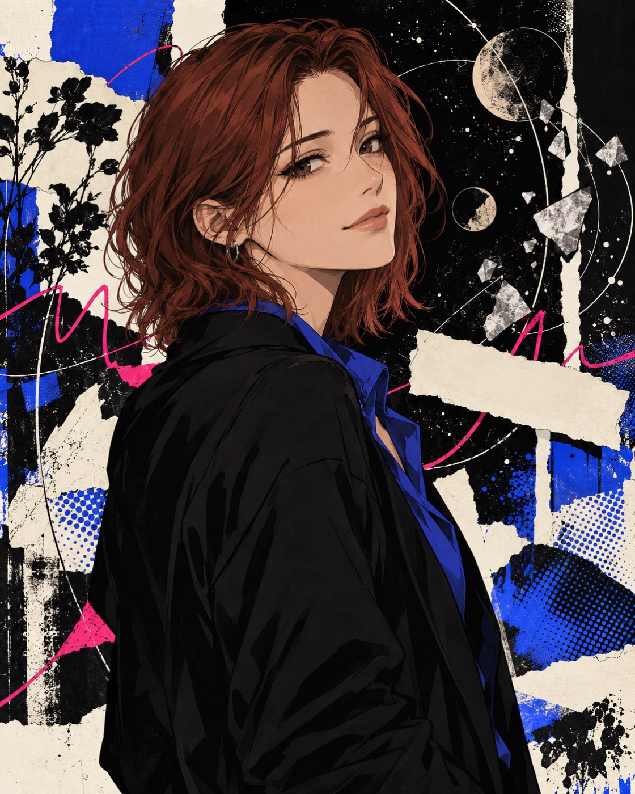
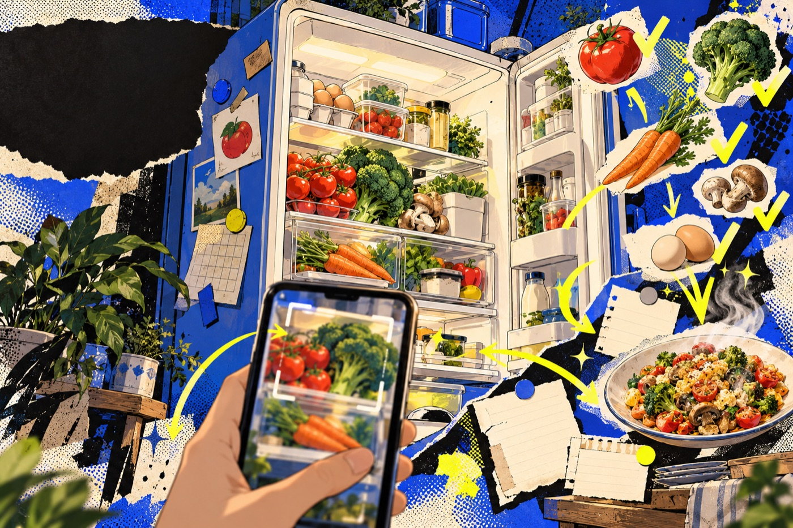
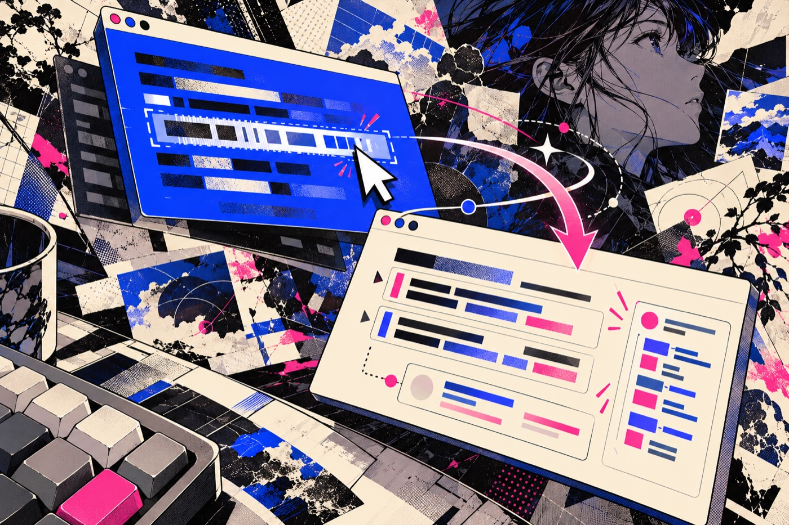

实验性艺术杂志 × 赛博线稿展廊 × 成熟动漫拼贴。以已验收的个人主页为基线，复用规则、参数、图形语法与美术方向。
#0A0A0C#F3EDDF#2B4CFF#E8FF3A#FF2E86#FFB020#00C2A8精确屏幕色值。荧光色印刷应单独打样；此处为屏幕规范。
01 / Aa
英文展示Anton，中文标题得意黑，正文系统无衬线。一个主要焦点，清楚的阅读区域。
96—112
章节之间的呼吸空间。3px/5px硬描边与适量硬投影，支持关闭装饰、键盘和减少动态。

成熟动漫人物，记忆、纸张与关系。

物件构图，食材、清单与动作关系。

窗口叠层，光标、选区与理解的流动。
概念插画，非软件界面截图。个人照片与个人动漫肖像未包含。
先安排主体、正文与入口，再增加撕纸、轨道、网点与注册线。
颜色、字体与母题保持识别，章节与作品各有自己的气氛。
走廊保持线稿，人物成年正常比例；准确标注作品状态与素材性质。